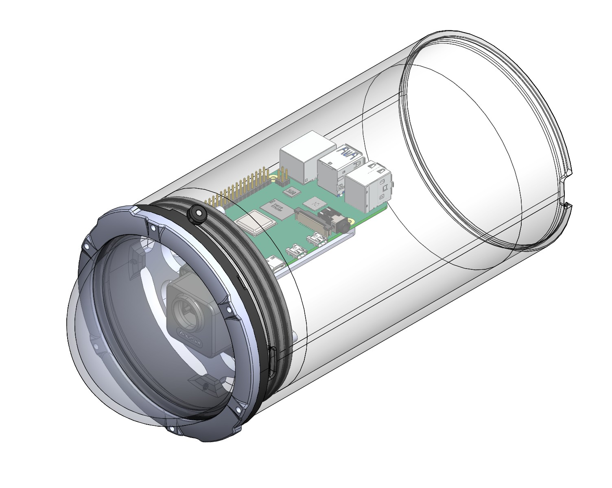
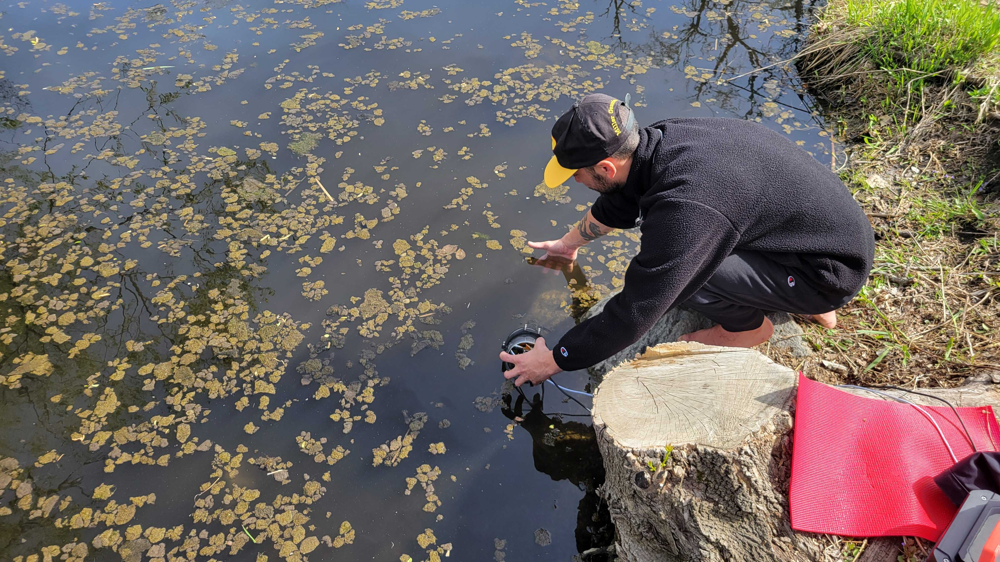

For our final project we were inspired to find a real life implementation for computer vision. A field that we've always been curious about but hadn't had the chance to explore until now was aquaculture and conservation. A few Aquatic invasive species threaten Madison area lakes, such as Zebra mussels and Spiny water fleas. To get a better perspective on what computer vision could do in this area, we talked to David Rowe.
A former Fish Supervisor at the Southern District of the DNR, David Rowe is now the Lake Management Supervisor at the Dane County Land & Water Resources Department. He told us about how Common Carp disrupt plant growth with their feeding patterns, turning high visibility parts of the lake into silty and low visibility ones. They are an invasive species and overproliferate, which endangers other native species. We discussed current forms of removal, using traps and trained personnel to select and remove Carp from waterways during the annual spawning season. David gave us some ideas about how an autonomous system to identify and remove target species would lower the amount of man-hours needed to effectively lower carp populations in a humane way.For this system we would use a trained object detection machine learning algorithm like "You Only Look Once" (YOLO).
Our first thought was in the context of stream systems, where computer vision has been used in fish passageways in dams to remove migrating invasive species. These environments have high visibility and stark white backgrounds. So a image dataset pipeline for training was created to scrape fish images off the internet and impose the fish onto a white background. This would put the fish into an environment that they would be recognized by the trained YOLO algorithm. The details of this system are outlined here: Dataset Pipeline.
However we realized that a novel system wouldn't be at a chokepoint but a passive trap that could capture fish in a specific lake throughout the year (while the ice is melted). So we modified our strategy taking into account the lake environmentsLake environments present multiple challenges:
To accommodate for these conditions, we modified our image collection process to find images of select species, but did not remove the backgrounds. We manually labeled the fish in each image using RoboFlow, drawing bounding boxes to indicate to the algorithm where in the image each fish was located.
Next we wrote a python script using the library albumentation to add random amounts of green shift, blur, and noise to the dataset while retaining the labels in each image
We trained two YOLO models, one on the "clean" image set, and one on the "dirty" image set. The model had more trouble training to the dirty image set, likely because shapes were harder to distinguish in the lower contrast environments.


despite these small differences, both models still struggled in the low visibility environment
We used the active filtering system outlined on this page: RTOS Image Recovery.
We ran both clear and muddy YOLO models on the filtered and unfiltered carp fishing videos and compared the results

The results show that the image recovery filter had a meaningful effect on model performance. The clean YOLO model without the feedback-control image filter failed to recognize the fish object in the test footage. In contrast, the dirty model recognized the object with and without filtering, but still misidentified the species.
The strongest result occurred when the clean YOLO model was paired with the feedback-control image recovery filter. In this case, the model correctly identified the fish species with a confidence peak of 0.92. This suggests that, for the tested video sample, the most effective configuration was the clean machine learning model combined with real-time image recovery. These results were not absolute however, as there were also instances where performance between the models was similarly effective. Additional experimentation in dynamic underwater environments is required before making a final determination.
Overall, the project demonstrates that underwater image recovery can improve the usefulness of computer vision models in low-visibility freshwater environments. While the system still requires additional field testing, improved waterproofing, and model training on more representative field data, the combined filtering and detection pipeline provides a solid foundation for automated invasive fish identification.
We wanted to bring this system into the real world to test its efficacy when running live on a Raspberry Pi 4B A blue robotics waterproof tube with dome cap was used as a container for the electronics. A custom camera mount was designed and 3D printed to center the lens in the dome. This prevents distortions when filming underwater. The mount also hosted the Raspberry pi, running a generic YOLO script to draw boxes around recognized objects. This script was modified to include the active filtering component described here.

A cart of equipment was brought to the mouth of a river near the Bakke Recreational center. We hoped to spot some fish with the camera but discovered two limitations in our physical system
